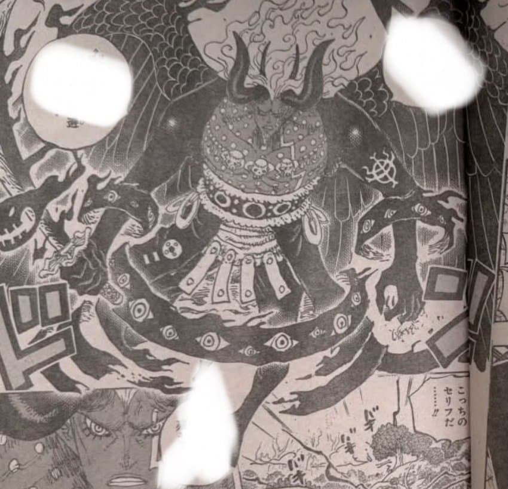

141 · 145 · 10 시간 전 · 원문

진짜좆구리다그냥시발
최종보스 디자인
블>>>>>>>>>>>>>>나>>>>>>>>>>>>>>>>>>>>>>>>>>> 원
수집 당시 최근 댓글 10개
앙타코띠 · 4 시간 전
어차피 최종보스는 검은수염 아님?
닭칼국수 · 3 시간 전
날개 윗부분 새같긴 하네
털달린바퀴벌레 · 3 시간 전
얘가 ㅁ ㅓㄴ 최종보스야 최종보스는 검은수염이지
뚜루뚜빠라바라 · 3 시간 전
캬 빨리 다음화 보고싶다
그려그럼그램 · 2 시간 전
임펠타운 마젤란 삼켰나
심도령 · 1 시간 전
오 날개가 악마날개가 아니라 새 날개처럼 보이네 앵무새설이 정설이되네
타운트 · 1 시간 전
그냥 씨발 빨리 앵무모드나 되라고 ㅋㅋ
도루묵이 · 1 시간 전
난 나루토 디자인이 블리치보다 훨 나은디. 아카츠키 깔쌈하고 담백하면서 임팩트 있고
문명의붕괴 · 1 시간 전
앵무새야?
친뽀다이슷끼 · 22 분 전
앵무새 들키니까 더 ㅈ박은 디자인으로 바꾼거아녀? ㅋㅋㅋ
댓글
수집 당시 최근 댓글 10개
앙타코띠 · 4 시간 전
어차피 최종보스는 검은수염 아님?
닭칼국수 · 3 시간 전
날개 윗부분 새같긴 하네
털달린바퀴벌레 · 3 시간 전
얘가 ㅁ ㅓㄴ 최종보스야 최종보스는 검은수염이지
뚜루뚜빠라바라 · 3 시간 전
캬 빨리 다음화 보고싶다
그려그럼그램 · 2 시간 전
임펠타운 마젤란 삼켰나
심도령 · 1 시간 전
오 날개가 악마날개가 아니라 새 날개처럼 보이네 앵무새설이 정설이되네
타운트 · 1 시간 전
그냥 씨발 빨리 앵무모드나 되라고 ㅋㅋ
도루묵이 · 1 시간 전
난 나루토 디자인이 블리치보다 훨 나은디. 아카츠키 깔쌈하고 담백하면서 임팩트 있고
문명의붕괴 · 1 시간 전
앵무새야?
친뽀다이슷끼 · 22 분 전
앵무새 들키니까 더 ㅈ박은 디자인으로 바꾼거아녀? ㅋㅋㅋ